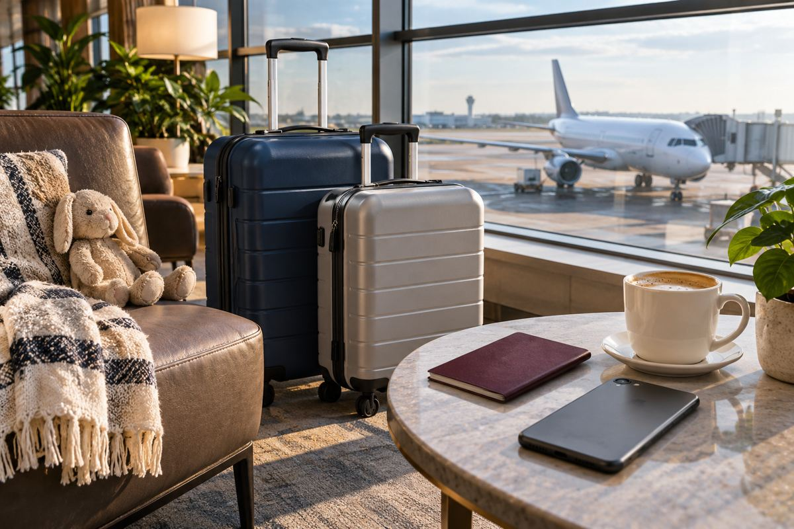

항공 / EXPLAINED
스카이워즈, 생활 속 적립 캠페인 공개…새 혜택과 기존 제도는 구분해야
11월 11일 발표는 마일 사용처를 알리는 캠페인으로, 모든 보상 조건이 바뀐 것은 아니다.

에미레이트 스카이워즈가 11월 11일 ‘Miles More Rewarding’ 캠페인을 공개했다. 항공권뿐 아니라 쇼핑과 호텔, 공연 등에서 마일을 쌓거나 사용하는 경로를 가족 단위의 사례로 소개한다. 이번에 새로 발표한 사실은 글로벌 홍보 캠페인의 출범이다. 자료에 열거된 적립처와 사용 방식 모두가 이날 새로 생겼거나 전 세계에서 같은 조건으로 시행된다고 읽어서는 안 된다.
스카이워즈는 에미레이트와 플라이두바이의 회원 보상 프로그램이다. 회사는 전 세계 회원이 4000만 명을 넘는다고 설명한다. 항공 마일은 비행 거리의 표기와 이름이 같지만, 적립과 사용에서는 프로그램별 규정에 따라 움직이는 보상 단위다. 잔액이 많다는 사실만으로 원하는 날짜의 보너스 항공권이나 승급 좌석이 확보되는 것은 아니다. 실제로 쓸 수 있는 좌석과 사용 조건이 함께 중요하다.
지역이 다른 적립 경로
공식 발표는 UAE의 Skywards Everyday와 두바이몰, 일부 국가의 온라인 쇼핑몰, 호텔 제휴 등을 소개한다. 이런 서비스는 이용 국가와 결제 방식에 따라 적용 범위가 다르다. 한국 거주자에게 UAE 매장 적립 경로를 그대로 국내 쇼핑 혜택처럼 설명하면 오해가 생긴다. 출장을 가거나 여행 중인 경우에도 해당 점포가 대상인지, 결제 카드 등록이나 영수증 제출이 필요한지 먼저 확인해야 한다.
생활비 지출에서 보상을 얻는 방식과 부족한 마일을 따로 구매하는 방식도 다르다. 발표가 제시한 마일 구매 가격은 1000마일에 미화 30달러다. 나누면 1마일당 3센트라는 구매 단가가 되지만, 이 숫자가 마일의 보편적인 사용 가치라는 뜻은 아니다. 사용하려는 항공편에서 실제로 줄어드는 현금액, 추가로 내는 세금과 수수료, 좌석 가능 여부를 함께 비교해야 한다. 환율만 적용해 한국에서 항상 유리하다고 결론 낼 수 없다.
Cash + Miles는 현금과 마일을 섞어 항공권을 결제하는 방식이다. 마일로 좌석을 교환하는 보너스 항공권이나 객실 승급과는 계산 방식이 같다고 가정할 수 없다. 승급은 좌석이 있을 때 가능하다는 조건도 붙는다. 공항에서 요청할 수 있다는 안내를 읽고 구매한 일반석 항공권이 반드시 상위 객실로 바뀔 것처럼 계획하는 것은 곤란하다. 예약 단계에서 표시되는 실제 차감량과 현금 부담을 기준으로 보아야 한다.
여행자에게 유용한 비교는 추가 소비를 한 뒤 남는 보상보다, 원래 하려던 지출에서 얼마나 실용적인 선택이 생기는지다. 편집부의 해석으로는 생활 제휴가 많아질수록 항공편을 자주 타지 않는 회원도 잔액을 모을 경로는 넓어진다. 반면 한 프로그램에 잔액을 모으는 결정은 사용 가능성과 조건을 함께 검토해야 의미가 있다. 홍보에 등장한 경험이나 호텔이 자신의 여행 날짜에도 예약 가능한지는 별개 문제다.
이번 발표에는 모든 국가에 통일 적용되는 새 시행일이나 보상표 전면 개편이 제시되지 않았다. 따라서 캠페인 발표일인 11월 11일을 기존 제휴 서비스의 최초 시행일로 쓰지 않았다. 회원은 출국 전에 대상 국가, 적립 제외 항목과 실제 보상 예약 화면을 확인할 필요가 있다. 본 기사는 프로그램 안내를 해설한 것으로, 특정 보상을 직접 이용하거나 마일 수익을 실현한 경험담은 아니다.